Midnight in Uppsala
Two years of midnight adventures in Uppsala. An exploration of celestial lights, city streets, and finding warmth.
I loved the nights in Uppsala. They always seemed to stretch longer
than the clock allowed, and during the deep winters, they would
slip into my days until the two became indistinguishable.
The nights were cold and dry, often making the city feel barren
and desolate. Some evenings made me anxious, while others were
full of chaotic love. But looking back, I realize the nights were
never truly dark, they were occupied by all kinds of Lights. Lights that I chose
to surround myself with.
They came in warm glows, bringing life to the heavens above Gamla
Uppsala, flowing over Fyris, and filling up various spaces around
the city. I swear I could feel their warmth against my skin,
even during the harsh winter. All I had to do was open my door
to let them in.
In the realm of the night, I saw wonders of nature and the beauty
of humanity. Once the radiance of the city warmed me, I found
a matching peace under the stars at Gamla. I wondered about the past through
aeons of galactic colours and found shelter in the present with
friends who brought luminous adventures to my life. What a shame it
would have been, to sleep through those nights.
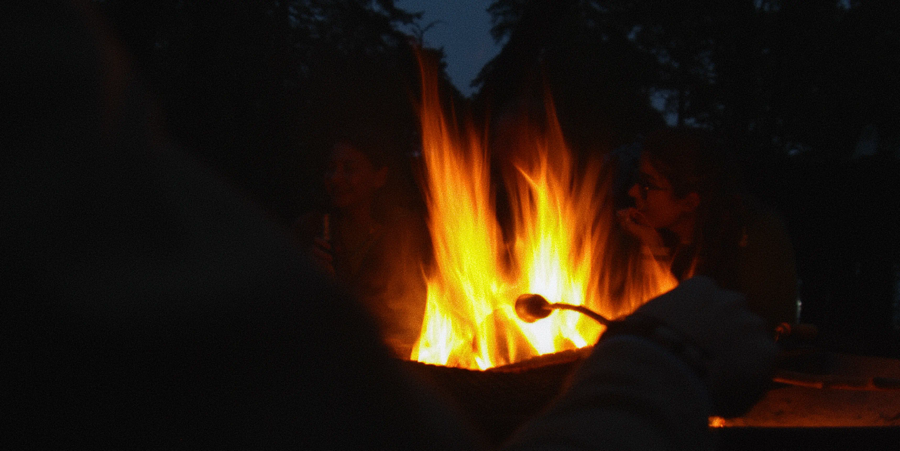
Luminous Adventures
That September, the fading daylight brought with it many new faces. We gathered in the woods at Gula Stigen, building campfires to push back against the impending autumn chill. Uppsala wasn't dark for me I was surrounded by radiance. We didn't just gather in the woods to find warmth, we carried it with us.
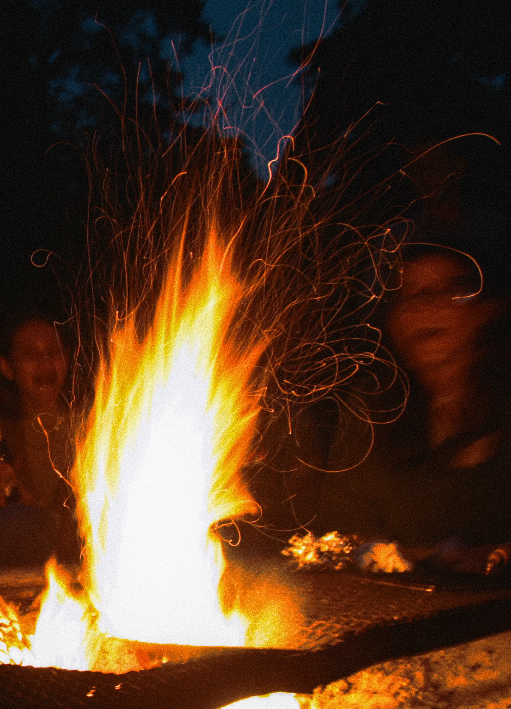
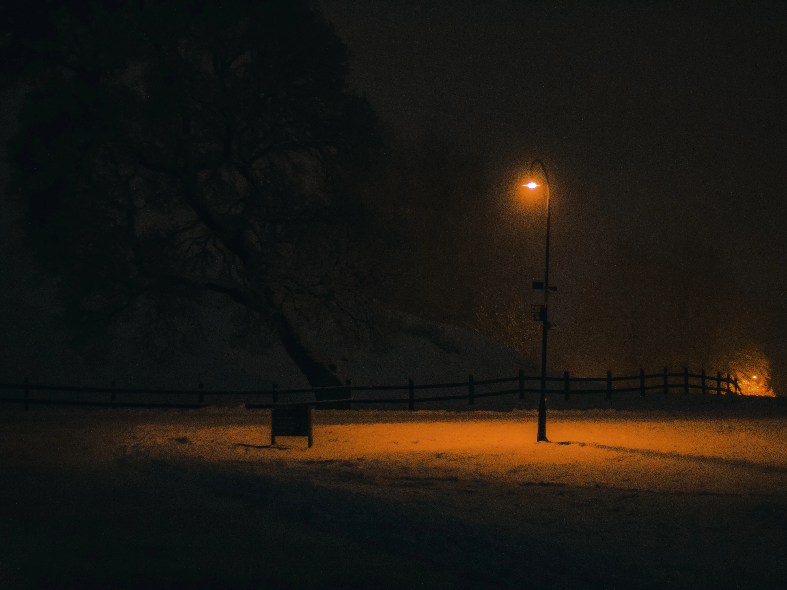
Once those campfire sparks caught the dry wood, they took on a life of their own, throwing wild, long trails across the sensor. We had our struggles, of course, questioning ourselves on days when our inner sparks felt too dim to navigate the coming winter. But like a camera left exposed to the night sky, we took each other in. We stayed together around those crackling fires. Even as the embers faded, the shared warmth we felt among ourselves was always enough to help us live the time we had to the absolute fullest.
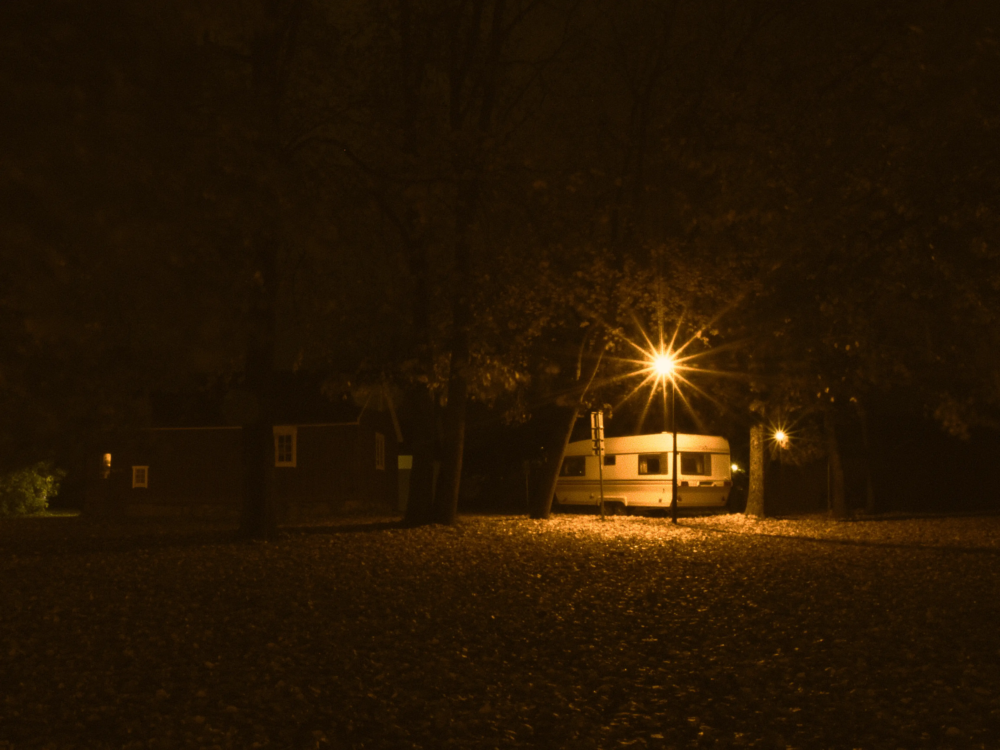
Many of us were still just getting to know ourselves, and in that luminous process of finding out who we were, we explored Uppsala together. We discovered new spaces to inhabit, adopted new ways of living together, and forged shared routines. But above all, we discovered each other, finding the very people who would ultimately illuminate those long Swedish nights for me.
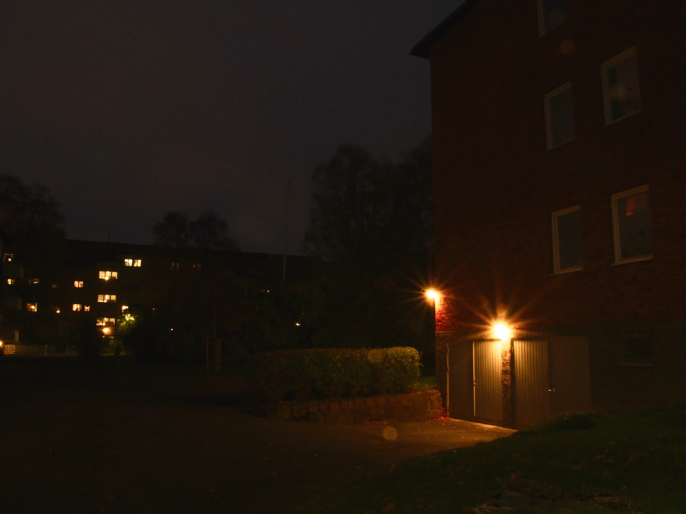

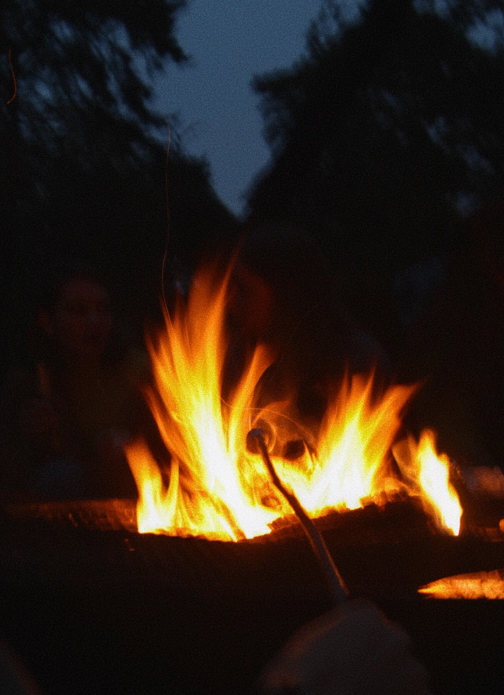
The Lights at Gamla Uppsala
There was a distinct kind of magic to be found just outside the city limits, where the radience of the streets faded into the dark. We would cycle down Vattholmavägen at midnight, the cold air biting at our faces, I watched the Lights conduct their eternal performance right beside me. They sometimes retreated to a faint green hum on the horizon, and on one night erupting into massive, shimmering ribbons directly above us. On some nights they were just specs white, creating a heavenly canopy above us, wrapping the ancient mounds of Gamla Uppsala in an otherworldly glow.
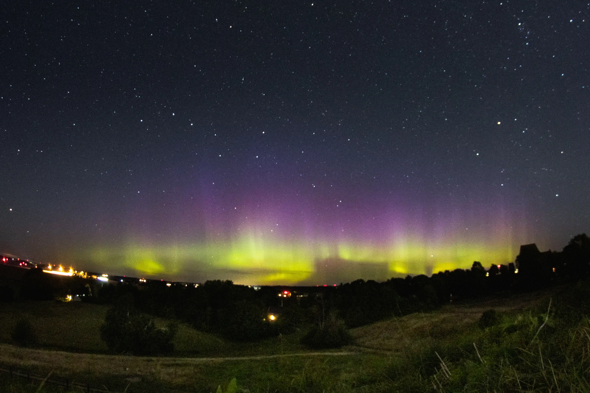


But the true lights were the ones standing out there, pointing their heads and lenses upward. I remember Lauren flashing a light across the grass under a heavy canopy of stars, painting her own warmth onto the earth. In that vast cold expanse just outside the city, it would have been easy to feel small or swallowed by the winter. Instead, standing together out there, the cold felt secondary to the shared stillness of the moments we had. I never had to search the horizon too desperately for illumination. The quiet conversations, the collective awe we held, and the simple comfort of not being alone, were more than enough to push back the cold and dark. I didn't need the sky to light up to find my way, because the people beside me already carried their own brilliance.
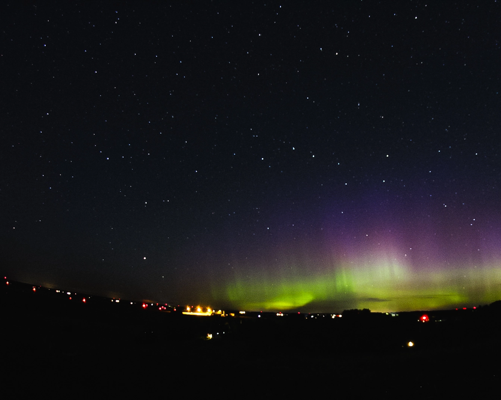
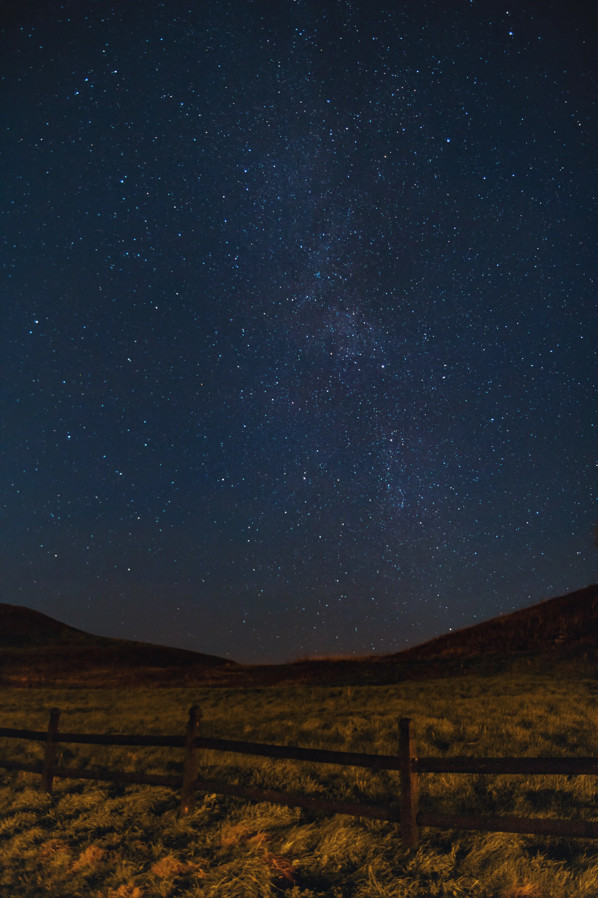
Looking at Maria and Gonzalo standing together on that grassy mound, the vibrant bands of green and purple on the horizon served merely as a beautiful celestial backdrop to their stillness. Even with the aurora burning in the distance, it was always the quiet presence of the people beside me that truly made me feel at home.

Kantorsgatan 36
There were nights when my own world felt like it was collapsing, threatening to pull me entirely into the dark. But the Lights around me always offered a tether to sanity. My room at Kantorsgatan 36 became a sanctuary, its window framing a quiet slice of this reality.
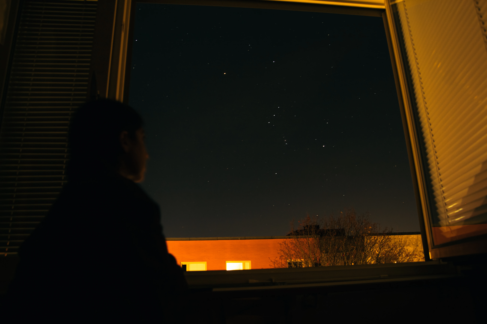
I remember Anush sitting by my window, the room dark behind her, her gaze fixed entirely on the sky as she searched for the Hunter in the stars. There was an immense comfort in that stillness, in realizing that the same stars that had watched over centuries of human history were quietly watching over us in our small student room. Sometimes, fighting the darkness didn't require grand adventures into the woods, all I needed to do was leave the door open and let my friends come in.

Moving Uppsala
The city itself had a pulse, driven by the glow of the streetlamps and the headlights of cars passing by. I captured their movement as long streaks of red and white, visualizing the unrelenting flow of time. But those specific Lights, never came back together in the same way once we left Uppsala, or at least, it feels that way in hindsight. Looking back, it seems as though that entire luminous performance was exclusively for us a gift designed perfectly for that specific chapter of our lives.

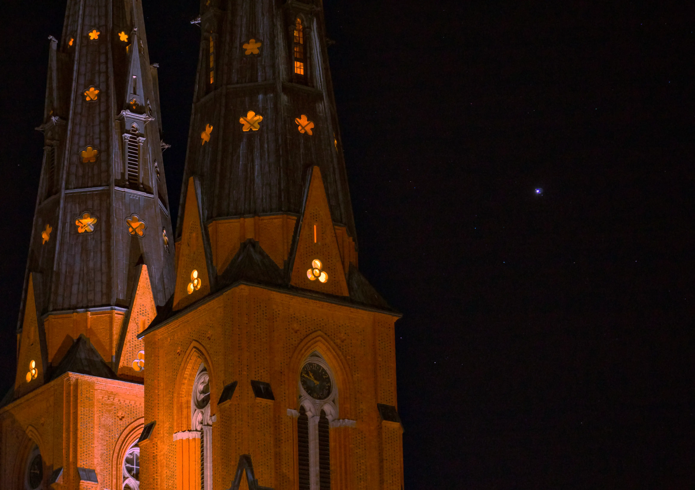
When the time inevitably came, we sailed on our boats down Fyris. We drifted past illuminated bridges and the quiet silhouettes, leaving that familiar glow behind. I watched the reflections of the city fade in our wake, hoping the people I loved would continue to shine in whatever dark awaited them next.